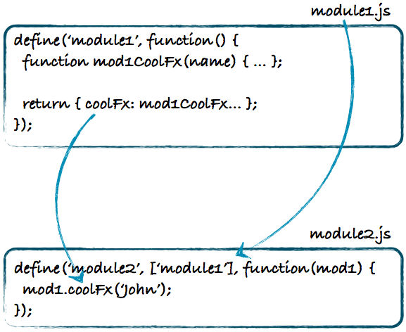

JS Total
2ème partie • 19/02/2014
Christophe Porteneuve @ JS Attitude & Jean-Pierre Vincent
JS Total
4 journées du 18 au 21 février
- Aujourd’hui : Outils, DevTools, modules et templating
- Demain : développement d’une SPA complète
- Vendredi : industrialisation et web mobile
Pondre le code
Mon éditeur chéri…
JSLint
guaranteed to hurt your feelings
Ce bon vieux Doug…
Ne tolérait initialement aucune déviation
Désormais configurable
Je suis plutôt d'accord avec toutes ses recos, donc…
JSHint
Plus flexible/souple/tolérant
A grandi au-delà de ce but originel pour faire de l'analyse statique de code (SCA) et fournir des recos de plus haut niveau aussi (complexité cyclomatique, etc.
Beautifiers
JSBeautifier.org et ses plugins (ex. pour Sublime Text 2)
UglifyJS (Node) fait aussi du beautifying…
Vous avez peut-être des fonctions inhérentes dans vos éditeurs ou EDI, etc.
Pratique comme filtres automatiques dans un VCS…
Déboguer le desktop
Console et panneaux avancés
(et aussi : Discover DevTools et The Breakpoint)
La console
Bien plus que console.log !
Complétion, Cmd+K/Ctrl+L, Shift+Return…
time / timeEnd
dir
$_
$0 / inspect(el), Force Element State, $$
monitorEvents, Break On… (+ Elements > Event Listeners)
Le panneau Sources
Naviguer dans les sources ; iframes ; workers !
Le pas à pas, en détail
Des breakpoints sur tout !
Expressions espions (watches)
Pile d'appels (call stack). Noms de fonctions.
Portée
Gestion des exceptions
Beautifying !
Le panneau Resources
Tout ce qui est stocké en local :
- Ressources chargées (catégorisées)
- Cookies
- Stockage session et local
- Bases de données
- AppCache
Le panneau Network
Analyse des performances de chargement
Distinction latence / chargement
Visualisation détaillée (en-têtes, corps, preview…)
Mode persistent (record)
Toute l'activité : ressources, XHR, WebSockets…
À compléter par…
Le panneau Timeline
Analyse des performances d'exécution
Chargement / Parsing / Rendering / Painting
Groupes asynchrones
Monitoring événements, FPS, RAM ; GC !
Mode persistent, là aussi.
Réduction du bruit (< 15ms)
Le panneau Profiles
Préalable obligatoire à l'optimisation !
Pas seulement JS : sélecteurs CSS et occupation RAM
Profils/snapshots nommés + persistence possible
Le panneau Audits
Genre DOM Monster + GTMetrix…
Performances loadtime + runtime
État actuel ou dès chargement
Voir aussi JS Performance Rocks!
Déboguer à distance
sur les mobiles
Weinre
WEb INspector REmote
Le WebInspector de WebKit (Chrome/Saf), connecté à un navigateur mobile via un serveur
Fait partie de Apache Cordova (ex Phonegap)
Adobe Edge Inspect
(ex Adobe Shadow)
Solution complète incluant Weinre (date un peu)
Logiciel desktop + extension Chrome + app mobile
Nécessite un compte Adobe Creative Cloud
(gratuit pour 1 périphérique)
Captures d'écran, etc.
Spécifiques Android
Chrome : debugging distant via la version desktop en USB (nécessite toutefois le SDK Android + la config en mode développement du téléphone)
Firefox (Fennec) : depuis la 15, debugging distant simple à configurer, via TCP/IP (ou USB + ADB forwarding)
Spécifique Mobile Safari
Sur iOS 5.x, on avait iWebInspector
Depuis iOS 6 on peut connecter via USB le Web Inspector de Safari
iOS WebKit Debug Proxy (Lion+)
Préprocesseurs
Parce que des fois on en veut plus
LESS
Perdait du terrain face à SASS… et puis Bootstrap !
Historiquement assez limité, a repris du poil de la bête dans les développements récents ; mais les wrappers (ex. RubyGem) ne suivent pas toujours…
Variables et expressions, imbrication, mixins « simples »
Ne jamais utiliser le processeur client (less.js) en production !
Préférer les watchers (builtin ou Guard)… et LiveReload ?
LESS : exemple
/* Mixin */
@base: #663333;
@complement1: spin(@base, 180);
@complement2: darken(spin(@base, 180), 5%);
@lighten1: lighten(@base, 15%);
@lighten2: lighten(@base, 30%);
/* ... */
.box-shadow(@style, @c) when (iscolor(@c)) {
box-shadow: @style @c;
-webkit-box-shadow: @style @c;
-moz-box-shadow: @style @c;
}
.box-shadow(@style, @alpha: 50%) when (isnumber(@alpha)) {
.box-shadow(@style, rgba(0, 0, 0, @alpha));
}
.box {
color: saturate(@base, 5%);
border-color: lighten(@base, 30%);
div { .box-shadow(0 0 5px, 30%) }
}SASS / SCSS
Cousin germain de HAML ; « LESS stéroïdé »
SCSS === SASS 3 ; sur-ensemble de CSS3.
Boost depuis que dans Rails par défaut
Idem LESS + mixins avancés, @extend, @for/each/while…
Excellente série de mixins : Bourbon
Là aussi, y'a des watchers…
SCSS : exemple
#navbar {
$navbar-width: 800px;
$items: 5;
$navbar-color: #ce4dd6;
width: $navbar-width;
border-bottom: 2px solid $navbar-color;
li {
float: left;
width: $navbar-width/$items - 10px;
background-color: lighten($navbar-color, 20%);
&:hover {
background-color: lighten($navbar-color, 10%);
}
}
}Stylus
J'aime ♥ :-)
Par les types qui font Socket.IO et plein de trucs Node
Syntaxe flexible, adaptable à vos goûts
Transparence des mixins/prefixers
Petites syntaxes qui tuent
Stylus : exemple
border-radius()
-webkit-border-radius arguments
-moz-border-radius arguments
border-radius arguments
body
font 12px Helvetica, Arial, sans-serif
a.button
border-radius 5pxCoffeeScript
Juste une tuerie™
Transpiler JavaScript (y'en a plein)
Pas du tout que pour les n00bs : chouchou des gourous aussi… Inspire énormément ES.next.
Évite les pièges, promeut les bonnes pratiques, améliore les perfs, sauve des chatons.
De plus en plus de libs et frameworks majeurs l'utilisent comme langage de dev.
Coffee : exemple
awardMedals = (first, second, others...) ->
gold = first
silver = second
rest = others
math =
root: Math.sqrt
square: square
cube: (x) -> x * square x
foods = ['broccoli', 'spinach', 'chocolate']
eat food for food in foods when food isnt 'chocolate'
yearsOld = max: 10, ida: 9, tim: 11
ages = for child, age of yearsOld
"#{child} is #{age}"
letTheWildRumpusBegin() unless answer is noLiveReload
Système client/serveur qui détecte les changement dans des fichiers et notifie le navigateur pour qu'il recharge la ressource concernée.
Idéal pour l'intégration CSS. Moins pour JS et HTML…
Mappings nécessaires dans le cas d'une concaténation ou de préprocesseurs (type Asset Pipeline)
Attention sur les derniers navigateurs, l’install peut changer.
À quoi a-t-on droit ?
Et comment compenser ?
Références
CanIUse + Google Analytics = Awesome !
HTML5Test : et ton navigateur, il roxxe ?
Modernizr
In-page feature detection
Sans doute le seul script forcément à chargement synchrone, et dans le head :-)
À peu près tous les aspects de CSS2/3 et « HTML5 »
Classes positives/négatives sur le document : évite au passage de saloper nos feuilles à coups de hacks CSS
Shims
Un shim est un ersatz, un substitut qui tente de fournir une API identique (ou au moins équivalente) à celle d'une fonction non prise en charge par l'environnement (typiquement le navigateur)
Y'en a plein !
Les fameux IEx.js de Dean Edwards, Raphaël, html5shiv, ExCanvas, SublimeVideo, Socket.IO, es5-shim, Transformie, PIE…
Organiser la codebase
Modules
CommonJS
Le format historique, synchrone, popularisé par Node
On parle en fait de CommonJS/1.0 (plein d'extensions…)
Très facile à comprendre :
exports.key = value
mod = require('pathspec')
CommonJS

AMD
Mais pourquoi ?
Asynchronous Module Definition
Conçu notamment pour les browsers
Tout module CommonJS peut être « enrobé » en AMD
Principal loader : RequireJS
Clé de voute :
define('name', [path, …], cb(mod, …) {})
AMD

Modules Harmony
Le besoin est devenu si fort, en cette ère de application-scale JavaScript
, que le TC39 se penche sur la question pour de bon.
Harmony a donc une proposition pour la prise en charge native de modules, et on ne va pas tarder à voir des implémentations de test.
Syntaxe pas terrible à ce stade, philosophiquement proche de AMD (forcément…), mais superficiellement proche de CommonJS :-)
AMD + CommonJS ?
Lorsqu'on préfère concaténer que multiplier les requêtes, rien n'empêche de recourir à CommonJS dans le navigateur…
…ou même à AMD, qui est ensuite converti en bloc unique et donc synchrone !
On trouve par exemple la première approche dans Brunch.io
La seconde est au cœur du RequireJS Optimizer : r.js
Exercice !
Templating
Un sujet très en vue
Serveur ou client ?
Guerre de religion n°1
Récemment, ça veut dire MVC-mania vs. PJAX
Comme toujours, ça dépend
Côté serveur on fait ce qu'on veut… Mais dans JS Total, on va s'intéresser au côté client.
Handlebars
En gros, successeur de Mustache
Donc l'école texte + innerHTML
On garde tout mais on étend avec #else et les helpers (dont des helpers de bloc, ce qui ouvre des horizons…)
Jade
Le truc qui déchire tout !
Pour simplifier, HAML côté client. Mais en mieux :-)
Servir frais avec du Stylus
Data binding
C'est l'autre école : mise à jour chirurgicale automatique du DOM et de la couche modèle (bindings entre la couche modèle et la couche vue, événements dans les deux sens).
Geek appeal, mais pas forcément plus performant (coût significatif de l'observation/abstraction)
Approche de AngularJS, KnockoutJS et BatmanJS (entre autres).
Exercice KnockoutJS !
Frameworks
Dis papa pourquoi ?
Parce que !
Dès qu'on commence à avoir une masse de code, un formalisme et un socle bien testé et bien maintenu deviennent indispensables. C'est comme pour le côté serveur !
On perçoit quelques grandes catégories :
La base : le squelette de MVC, sans plus
Les full clients : la totale… pour le côté client
Les full stacks : client + serveur, façon Symfony/Rails. Rendu possible par l'émergence de Node
La base
(on voudra souvent ajouter des plugins)
(voire Marionnette)
Full Client
Backbone + Marionette
…
« full stack »
(rien à voir avec Tower)
CompoundJS (ex-RailwayJS)
…
Outillage dev
À suivre…
Coder la SPA
- Architecture et déroulé du boot
- Stockage en session
- Moment.js
- Vues imbriquées
- Géolocalisation et Google Maps Places
- Modèles Backbone et persistence serveur
- Web sockets
- Stockage local
- Online/offline et AppCache